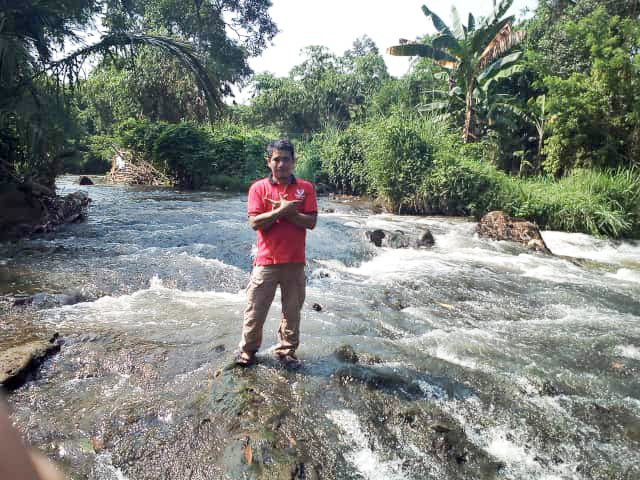
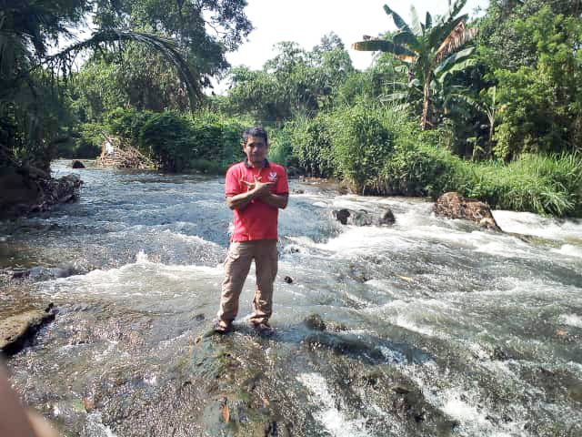

Bina Lestari adalah bentuk Empati kita pada keadaan lingkungan alam, hutan yang semakin berkurang, sungai semakin kotor, sampah yang tak tertanggulangi, tak banyak fokus kami dalam hal ini di awal perjuangan ini, kami memilih untuk fokus pada permasalahan sampah, di sungai, jalan dan lingkungan sekitar kami.
SUSUR SUNGAI

Susur Sungai adalah bentuk kecil kepedulian kita terhadap kondisi sungai. khususnya sungai daerah perkotaan. kami pun melakukan beberapa kerja sama dengan beberapa komunitas yang memang fokus untuk pelestarian sungai. selain mengangkat sampah yang menumpuk di sungai, kami pun memberikan edukasi kepada masyarakat sekitar agar tidak membuang sampah sembarangan
Donasi untuk program ini Rp 300.000
 
